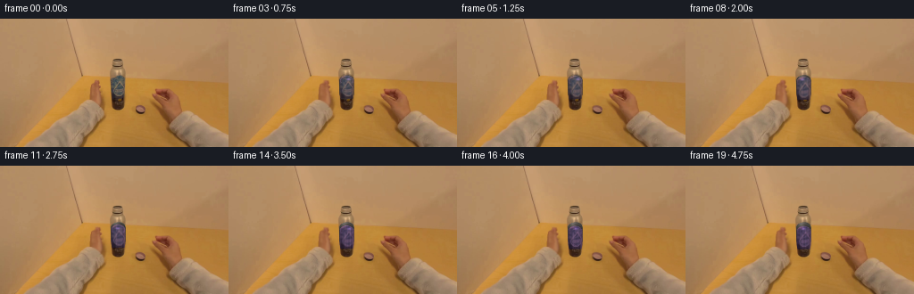
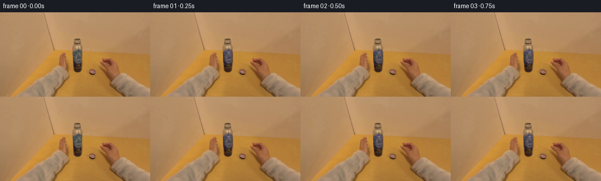

CODING AGENTS AS PIXEL WORLD MODELS
traex/DeepSeek-V4.1-Flash · common50_0014
点击播放 · 原生 RGB 像素
此结果可播放，但该运行尚未通过最终提交审核。页面展示不代表评测通过。
逐轮保存的候选
回放视频、检查图与代码变化。
每份候选均可单独播放。实际图片检查记录在下方工具轨迹中。
候选 01播放与检查图
点击播放 · 原生 RGB 像素


展开代码变化
--- 上一保存版本
+++ 本次保存版本
@@ -0,0 +1,202 @@
+from pathlib import Path
+
+import numpy as np
+from PIL import Image
+
+import artifact_io
+
+
+CASE_DIR = Path(__file__).resolve().parent
+WIDTH, HEIGHT, FRAME_COUNT = 256, 144, 20
+
+
+def smoothstep(value):
+ value = np.clip(value, 0.0, 1.0)
+ return value * value * (3.0 - 2.0 * value)
+
+
+def bilinear_sample(image, xs, ys):
+ """Sample an HxWx3 float image with clamped bilinear coordinates."""
+ xs = np.clip(xs, 0.0, image.shape[1] - 1.0)
+ ys = np.clip(ys, 0.0, image.shape[0] - 1.0)
+ x0 = np.floor(xs).astype(np.int32)
+ y0 = np.floor(ys).astype(np.int32)
+ x1 = np.minimum(x0 + 1, image.shape[1] - 1)
+ y1 = np.minimum(y0 + 1, image.shape[0] - 1)
+ fx = (xs - x0)[..., None]
+ fy = (ys - y0)[..., None]
+ top = image[y0, x0] * (1.0 - fx) + image[y0, x1] * fx
+ bottom = image[y1, x0] * (1.0 - fx) + image[y1, x1] * fx
+ return top * (1.0 - fy) + bottom * fy
+
+
+def cap_alpha(xx, yy, top, center_x=132.0):
+ """Anti-aliased silhouette of the short, cylindrical bottle cap."""
+ dx = np.abs(xx - center_x)
+ body_bottom = top + 26.0
+ top_center = top + 5.8
+
+ # The top is a shallow ellipse; the sides taper slightly at the base.
+ ellipse_d = np.sqrt((dx / 8.0) ** 2 + ((yy - top_center) / 5.8) ** 2)
+ ellipse_alpha = np.clip((1.0 - ellipse_d) * 11.0 + 0.5, 0.0, 1.0)
+
+ taper = np.clip((yy - (body_bottom - 5.0)) / 5.0, 0.0, 1.0)
+ radius = 8.0 - 1.1 * taper
+ body_alpha = np.clip(radius - dx + 0.55, 0.0, 1.0)
+ body_alpha *= np.clip(body_bottom - yy + 0.55, 0.0, 1.0)
+
+ top_mask = yy < top_center
+ return np.where(top_mask, ellipse_alpha, body_alpha)
+
+
+def make_neck(frame_shape):
+ """A clean brushed-metal neck revealed as the cap travels downward."""
+ yy, xx = np.mgrid[0 : frame_shape[0], 0 : frame_shape[1]].astype(np.float32)
+ center_x = 132.0
+ dx = xx - center_x
+
+ # A very small taper keeps the neck seated beneath the cap silhouette.
+ half_width = 8.15 - 0.022 * np.clip(yy - 63.0, 0.0, 40.0)
+ edge = np.clip(half_width - np.abs(dx) + 0.6, 0.0, 1.0)
+ vertical = np.clip((yy - 59.5) / 1.5, 0.0, 1.0)
+ vertical *= np.clip((102.5 - yy) / 3.0, 0.0, 1.0)
+ alpha = edge * vertical
+
+ u = np.clip(dx / np.maximum(half_width, 1.0), -1.0, 1.0)
+ cylindrical = 0.66 + 0.34 * np.exp(-((u + 0.34) / 0.42) ** 2)
+ cylindrical -= 0.12 * u**2
+ base_luma = 113.0 - 0.72 * np.clip(yy - 62.0, 0.0, 42.0)
+ threading = 4.5 * np.sin(2.0 * np.pi * (yy - 61.0) / 2.35)
+ threading *= np.exp(-((yy - 78.0) / 18.0) ** 2)
+ brushed = 2.0 * np.sin(17.0 * yy + 7.0 * u)
+ luma = base_luma * cylindrical + threading + brushed
+
+ neck = np.stack(
+ (luma * 1.035 + 2.0, luma * 0.995 + 1.5, luma * 0.94 + 1.0), axis=-1
+ )
+ return np.clip(neck, 0.0, 255.0), alpha[..., None]
+
+
+def warp_fingertip(frame, center, radii, shift, phase):
+ """Subtle local skin warp so the fingertips follow the cap's rotation."""
+ yy, xx = np.mgrid[0 : frame.shape[0], 0 : frame.shape[1]].astype(np.float32)
+ cx, cy = center
+ rx, ry = radii
+ influence = np.exp(-(((xx - cx) / rx) ** 4 + ((yy - cy) / ry) ** 4))
+ influence *= np.clip((np.abs(xx - 132.0) - 7.0) / 5.0, 0.0, 1.0)
+ influence = smoothstep(influence * 1.25)
+
+ dx = shift[0] * (0.72 + 0.28 * np.cos(phase))
+ dy = shift[1] * np.sin(phase)
+ warped = bilinear_sample(frame, xx - dx, yy - dy)
+ return frame * (1.0 - influence[..., None]) + warped * influence[..., None]
+
+
+def render_cap(frame, first, top, theta, tint_strength):
+ """Render the moving cap using cylindrical texture motion and violet tinting."""
+ yy, xx = np.mgrid[0 : frame.shape[0], 0 : frame.shape[1]].astype(np.float32)
+ alpha = cap_alpha(xx, yy, top)
+ active = alpha > 0.001
+
+ # The source patch follows the cap; a gentle sinusoidal shear makes the
+ # vertical ribs travel around the cylinder instead of sliding as a flat card.
+ source_y = yy - (top - 63.0)
+ u = np.clip((xx - 132.0) / 8.0, -1.0, 1.0)
+ texture_shift = 0.9 * np.sin(theta + 0.85 * (source_y - 76.0) / 9.0) * (1.0 - u * u)
+ source_x = xx - texture_shift
+ source = bilinear_sample(first, source_x, source_y)
+
+ source_luma = source[..., 0] * 0.299 + source[..., 1] * 0.587 + source[..., 2] * 0.114
+ rib = 0.090 * np.cos(2.0 * np.pi * (u * 5.2 - theta * 1.35))
+ rib += 0.032 * np.cos(2.0 * np.pi * (u * 10.4 - theta * 2.70))
+ cylindrical = 0.76 + 0.24 * np.sqrt(np.maximum(0.0, 1.0 - u * u))
+ luma = np.clip(source_luma * (1.0 + rib) * cylindrical, 18.0, 238.0)
+
+ purple = np.stack(
+ (luma * 0.84 + 7.0, luma * 0.59 + 3.5, luma * 1.10 + 10.0), axis=-1
+ )
+ original = source * cylindrical[..., None]
+ cap_rgb = original * (1.0 - tint_strength) + purple * tint_strength
+
+ # A soft lavender rim and a traveling top glint describe the cap's rotation.
+ rim_distance = np.abs(np.sqrt(((xx - 132.0) / 8.0) ** 2 + ((yy - (top + 5.8)) / 5.8) ** 2) - 0.88)
+ rim = np.exp(-(rim_distance / 0.10) ** 2) * (yy < top + 8.5)
+ rim *= 0.13 + 0.07 * np.cos(theta)
+ glint_x = 132.0 + 3.0 * np.sin(theta + 0.35)
+ glint_y = top + 3.6 + 0.65 * np.cos(theta)
+ glint = np.exp(-(((xx - glint_x) / 2.3) ** 2 + ((yy - glint_y) / 1.35) ** 2))
+ cap_rgb += rim[..., None] * np.array([72.0, 48.0, 104.0])
+ cap_rgb += glint[..., None] * np.array([52.0, 35.0, 72.0])
+
+ # Thin dark edge keeps the cap visually seated on the metal neck.
+ edge = np.clip(1.0 - np.abs(alpha - 0.45) * 4.0, 0.0, 1.0)
+ cap_rgb *= 1.0 - 0.16 * edge[..., None]
+ return frame * (1.0 - alpha[..., None]) + np.clip(cap_rgb, 0.0, 255.0) * alpha[..., None]
+
+
+def make_frame(first, index):
+ if index == 0:
+ return first.copy()
+
+ frame = first.astype(np.float32).copy()
+ progress = smoothstep((index - 1.0) / 17.0)
+ theta = 2.0 * np.pi * 1.45 * progress
+ cap_drop = 4.2 * progress
+ cap_top = 63.0 + cap_drop
+
+ # Opposing fingertip motion sells the hand turning the cap.
+ phase = theta + 0.45 * np.sin(np.pi * progress)
+ frame = warp_fingertip(
+ frame,
+ center=(117.0, 82.0),
+ radii=(12.5, 20.0),
+ shift=(1.25, 0.42),
+ phase=phase,
+ )
+ frame = warp_fingertip(
+ frame,
+ center=(148.0, 82.0),
+ radii=(12.5, 20.0),
+ shift=(-1.15, -0.38),
+ phase=phase + np.pi,
+ )
+
+ # Replace the original cap footprint with a clean metal neck. The cap is
+ # then composited at its new vertical position.
+ yy, xx = np.mgrid[0 : HEIGHT, 0 : WIDTH].astype(np.float32)
+ old_mask = cap_alpha(xx, yy, 63.0)
+ removal = np.clip((old_mask - 0.08) * 1.7, 0.0, 1.0)
+ neck_rgb, _ = make_neck(frame.shape)
+ frame = frame * (1.0 - removal[..., None]) + neck_rgb * removal[..., None]
+
+ # Contact shadow, softened only around the cap and its immediate neck.
+ shadow_mask = cap_alpha(xx, yy, cap_top - 2.2)
+ shadow = np.exp(-(((xx - 132.0) / 11.0) ** 2 + ((yy - (cap_top + 10.0)) / 14.0) ** 2))
+ shadow *= 0.22 * shadow_mask
+ frame *= 1.0 - shadow[..., None]
+
+ tint_strength = 0.20 + 0.43 * smoothstep(progress)
+ frame = render_cap(frame, first, cap_top, theta, tint_strength)
+
+ # Keep the room light steady; this tiny breathing avoids a frozen plate.
+ light = 1.0 + 0.004 * np.sin(2.0 * np.pi * progress - 0.5)
+ frame *= light
+ return np.clip(frame, 0.0, 255.0).astype(np.uint8)
+
+
+def main():
+ first = np.asarray(Image.open(CASE_DIR / "first_frame.png").convert("RGB"), dtype=np.uint8)
+ assert first.shape == (HEIGHT, WIDTH, 3)
+
+ frames = np.empty((FRAME_COUNT, HEIGHT, WIDTH, 3), dtype=np.uint8)
+ frames[0] = first
+ for index in range(1, FRAME_COUNT):
+ frames[index] = make_frame(first, index)
+
+ # The contract requires frame zero to remain pixel-identical to the input.
+ assert np.array_equal(frames[0], first)
+ artifact_io.save(frames, CASE_DIR)
+
+
+if __name__ == "__main__":
+ main()
可观测工具轨迹
实际执行的命令与返回图片。
命令 1exit 0
/bin/bash -c "pwd && rg --files -g '"'!*'"\\.git*' | sed -n '1,160p'"
命令 2exit 0
/bin/bash -c "sed -n '1,240p' prompt.txt"
命令 3exit 0
/bin/bash -c "sed -n '1,300p' GENERATION_RULES.md"
命令 4exit 0
/bin/bash -c "find . -maxdepth 2 -type f -printf '%p %s bytes\\n' | sort"
命令 5exit 0
/bin/bash -c "sed -n '1,260p' artifact_io.py"
命令 6exit 0
/bin/bash -c "cat task_spec.json && sed -n '1,240p' player_template.html"
命令 7exit 0
/bin/bash -c "python - <<'PY'
from PIL import Image
import numpy as np
im=Image.open('first_frame.png')
print(im.mode, im.size)
a=np.array(im)
print(a.shape,a.dtype,a.min(),a.max())
# top colors
u,c=np.unique(a.reshape(-1,a.shape[2]),axis=0,return_counts=True)
idx=np.argsort(c)[-25:][::-1]
for i in idx: print(tuple(u[i]),int(c[i]))
PY"命令 8exit 0
/bin/bash -c "python - <<'PY'
from PIL import Image
import numpy as np
from colorsys import rgb_to_hsv
im=np.array(Image.open('first_frame.png')).astype(np.float32)/255
mx=im.max(2); mn=im.min(2); df=mx-mn
# HSV vectorized
h=np.zeros_like(mx); s=np.where(mx>0,df/np.maximum(mx,1e-6),0); v=mx
r,g,b=im[:,:,0],im[:,:,1],im[:,:,2]
m=(mx==r)&(df>0); h[m]=((g[m]-b[m])/df[m])%6
m=(mx==g)&(df>0); h[m]=(b[m]-r[m])/df[m]+2
m=(mx==b)&(df>0); h[m]=(r[m]-g[m])/df[m]+4
h*=60
# spatial 32x18 cells: dominant color-ish / purple, gray, skin
for y in range(0,144,8):
row=''
for x in range(0,256,8):
hh=h[y:y+8,x:x+8]; ss=s[y:y+8,x:x+8]; vv=v[y:y+8,x:x+8]
purple=((hh>260)&(hh<340)&(ss>.20)&(vv>.15)).mean()
gray=((ss<.12)&(vv>.25)).mean()
skin=((hh<35)&(ss>.25)&(ss<.7)&(vv>.35)).mean()
green=((hh>60)&(hh<170)&(ss>.15)).mean()
if purple>.18: c='P'
elif gray>.45: c='G'
elif skin>.55: c='s'
elif green>.20: c='g'
else:
c=' .:-=+*#%@'[min(9,int(vv.mean()*10))]
row+=c
print(row)
PY"命令 9exit 0
/bin/bash -c "python - <<'PY'
from PIL import Image
import numpy as np
im=np.array(Image.open('first_frame.png'))
# print palette via kmeans with cv2
try:
import cv2
Z=im.reshape(-1,3).astype(np.float32)
crit=(cv2.TERM_CRITERIA_EPS+cv2.TERM_CRITERIA_MAX_ITER,30,0.2)
_,lab,cen=cv2.kmeans(Z,16,None,crit,5,cv2.KMEANS_PP_CENTERS)
cen=np.uint8(cen)
cnt=np.bincount(lab.ravel(),minlength=16)
for i in np.argsort(cnt)[::-1]: print(i, tuple(int(x) for x in cen[i]), int(cnt[i]))
print('clusters shape')
m=lab.reshape(144,256)
# chars sorted by luminance index
chars='ABCDEFGHIJKLMNOP'
order=np.argsort(cen.mean(1))
remap=np.zeros(16,int)
for j,i in enumerate(order): remap[i]=j
chars=' .:-=+*#%@&WMQB8"'$0'"'
for y in range(0,144,4):
print(''.join(chars[remap[m[y,x]]] for x in range(0,256,2)))
except Exception as e: print(e)
PY"命令 10exit 0
/bin/bash -c "python - <<'PY'
from PIL import Image
import numpy as np
im=np.array(Image.open('first_frame.png')).astype(float)
# block 16x16 means and std, hsv class
for y in range(0,144,16):
row=[]
for x in range(0,256,16):
p=im[y:y+16,x:x+16]; m=p.mean((0,1)); sd=p.std((0,1)).mean()
row.append(f'{m[0]:.0f},{m[1]:.0f},{m[2]:.0f}/{sd:.0f}')
print(f'y={y:3}', ' | '.join(row))
PY"命令 11exit 1
/bin/bash -c "python - <<'PY'
from PIL import Image
im=Image.open('first_frame.png')
# save nearest upscale and ascii edge stats
im.resize((1024,576),Image.Resampling.NEAREST).save('/tmp/first_big.png')
# color-sampled central crop to terminal using ANSI blocks maybe
im.crop((60,20,196,144)).resize((136,124),Image.Resampling.NEAREST).save('/tmp/crop.png')
PY"命令 12exit 0
/bin/bash -c "python - <<'PY'
from PIL import Image
im=Image.open('first_frame.png')
im.resize((1024,576),Image.Resampling.NEAREST).save('.tmp/first_big.png')
im.crop((60,20,196,144)).resize((136,124),Image.Resampling.NEAREST).save('.tmp/crop.png')
PY"命令 13exit 0
/bin/bash -c "python - <<'PY'
from PIL import Image
import numpy as np
im=np.array(Image.open('first_frame.png')).astype(np.float32)/255
r,g,b=im[:,:,0],im[:,:,1],im[:,:,2]
mx=im.max(2); mn=im.min(2); df=mx-mn
# purple: b/r and b/g elevated
for desc,m in [
('purple loose',(b>r*1.03)&(b>g*1.10)&(b>0.12)),
('purple strong',(b>r*1.10)&(b>g*1.18)&(b>0.10)),
('metal',(mx-mn<.09)&(mx>.25)),
('dark',mx<.32),
('bright',mx>.70)]:
ys,xs=np.where(m)
print(desc,len(xs), 'bbox', (xs.min(),ys.min(),xs.max(),ys.max()) if len(xs) else None,'mean', im[m].mean(0) if len(xs) else '')
# grid counts 8x8
if len(xs):
grid=np.zeros((18,32),int)
for x,y in zip(xs,ys):grid[y//8,x//8]+=1
for row in grid:
print(''.join(' .:-=+*#%@'[min(9,int(v/3))] for v in row))
PY"命令 14exit 1
/bin/bash -c "python - <<'PY'
from PIL import Image
import numpy as np, colorsys
im=np.array(Image.open('first_frame.png'))
# crop x 100:180 y 45:125, each 2x2 average; assign class by HSV
crop=im[40:144,90:200].reshape(52,2,110,2,3).mean((1,3)).astype(int)
for yi,row in enumerate(crop):
s=''
for p in row:
r,g,b=p/255
h,sv,v=colorsys.rgb_to_hsv(r,g,b)
h*=360
if v<.25: c='K'
elif sv<.10 and v>.20: c='N' # neutral
elif sv<.20 and v>.20: c='n'
elif 250<=h<=345 and sv>.18: c='P'
elif h<25 or h>345:
c='r' if v<.48 else ('R' if sv>.35 else 'p')
elif 25<=h<48: c='o' if v<.58 else ('O' if sv>.4 else 'y')
elif 48<=h<90: c='Y'
elif 90<=h<170: c='G'
elif 170<=h<250: c='C'
else: c='?'
s+=c
print(f'{40+yi*2:3d} {s}')
PY"命令 15exit 0
/bin/bash -c "python - <<'PY'
from PIL import Image
import numpy as np, colorsys
im=np.array(Image.open('first_frame.png'))
crop=np.array(Image.fromarray(im[40:144,90:200]).resize((110,52),Image.Resampling.NEAREST))
for yi,row in enumerate(crop):
s=''
for p in row:
r,g,b=p/255
h,sv,v=colorsys.rgb_to_hsv(r,g,b); h*=360
if v<.25: c='K'
elif sv<.10 and v>.20: c='N'
elif sv<.20 and v>.20: c='n'
elif 250<=h<=345 and sv>.18: c='P'
elif h<25 or h>345: c='r' if v<.48 else ('R' if sv>.35 else 'p')
elif 25<=h<48: c='o' if v<.58 else ('O' if sv>.4 else 'y')
elif 48<=h<90: c='Y'
elif 90<=h<170: c='G'
elif 170<=h<250: c='C'
else: c='?'
s+=c
print(f'{40+yi*2:3d} {s}')
PY"命令 16exit 0
/bin/bash -c "python - <<'PY'
from PIL import Image
import numpy as np
im=np.array(Image.open('first_frame.png')).astype(float)
# local color difference from smooth background using gaussian blur
from PIL import ImageFilter
bg=np.array(Image.fromarray(im.astype(np.uint8)).filter(ImageFilter.GaussianBlur(8))).astype(float)
d=np.linalg.norm(im-bg,axis=2)
for t in [10,15,20,25,30,40]:
m=d>t
ys,xs=np.where(m)
print(t,len(xs), (xs.min(),ys.min(),xs.max(),ys.max()))
# component bboxes via cv2
import cv2
n,l,stats,c=cv2.connectedComponentsWithStats(m.astype(np.uint8),8)
comps=sorted(stats[1:].tolist(), key=lambda z:z[4], reverse=True)[:10]
print(comps)
PY"命令 17exit 0
/bin/bash -c "python - <<'PY'
from PIL import Image
import numpy as np
im=np.array(Image.open('first_frame.png')).astype(float)
# means per y x central / color sample every 8 px
for y in range(40,121,5):
print('y',y,'x',[(x,tuple(im[y,x].astype(int))) for x in range(110,161,5)])
PY"命令 18exit 1
/bin/bash -c "python - <<'PY'
from PIL import Image, ImageFilter
import numpy as np
im=np.array(Image.open('first_frame.png').convert('RGB'))
g=np.array(Image.open('first_frame.png').convert('L')).astype(float)
# blur then Sobel gradient
import cv2
b=cv2.GaussianBlur(g,(3,3),0)
gx=cv2.Sobel(b,cv2.CV_32F,1,0,ksize=3); gy=cv2.Sobel(b,cv2.CV_32F,0,1,ksize=3)
e=np.hypot(gx,gy)
# downsample max per 2x2
E=e.reshape(72,2,128,2).max((1,3))
for y,row in enumerate(E):
print(''.join(' .:-=+*#%@'[min(9,int(v/45))] for v in row))
PY"命令 19exit 0
/bin/bash -c "python - <<'PY'
from PIL import Image
import numpy as np, cv2
g=np.array(Image.open('first_frame.png').convert('L'),dtype=np.float32)
b=cv2.GaussianBlur(g,(3,3),0)
gx=cv2.Sobel(b,cv2.CV_32F,1,0,ksize=3); gy=cv2.Sobel(b,cv2.CV_32F,0,1,ksize=3)
e=np.hypot(gx,gy); E=e.reshape(72,2,128,2).max((1,3))
for row in E: print(''.join(' .:-=+*#%@'[min(9,int(v/45))] for v in row))
PY"命令 20exit 0
/bin/bash -c "python - <<'PY'
from PIL import Image
import numpy as np
im=np.array(Image.open('first_frame.png')).astype(np.int16)
# use line regions: sample x,y and detect local horizontal color changes
# print row runs quantized color for y values, central x 100:175
for y in range(45,125,5):
vals=im[y,90:190]
# quantize each channel to 16 bins
q=(vals//16)
runs=[]; last=None
for i,v in enumerate(q):
t=tuple(v)
if t"'!=last:
runs.append([90+i,90+i,t]);last=t
else:runs[-1][1]=90+i
runs=[r for r in runs if r[1]-r[0]>=1]
print('"'Y',y, ' | '.join(f'{a}-{b}:{c}' for a,b,c in runs))
PY"命令 21exit 0
/bin/bash -c "python - <<'PY'
from PIL import Image
import numpy as np
im=np.array(Image.open('first_frame.png')).astype(float)
# print selected row RGB values each pixel around object x120-150 y60-105
for y in [60,62,64,66,68,70,72,74,76,78,80,82,84,86,88,90,92,94,96,98,100,102,104,106,108]:
print('Y',y)
for x in range(118,153,4): print(x,tuple(im[y,x].astype(int)),end='; ')
print()
PY"命令 22exit 0
/bin/bash -c "python - <<'PY'
from PIL import Image
import numpy as np
im=np.array(Image.open('first_frame.png')).astype(float)
# central crop x110:155 y55:115, 1 char per pixel color categories
for y in range(52,118):
s=''
for x in range(108,158):
r,g,b=im[y,x]/255
mx=max(r,g,b); mn=min(r,g,b); sat=(mx-mn)/max(mx,1e-6)
if mx<.22: c='K'
elif mx<.35: c='k'
elif sat<.08: c='N' if mx>.5 else 'n'
elif b>=r*1.02 and b>=g*1.04: c='P'
elif sat<.18: c='.'
elif r>g*1.35 and g>b*1.25: c='Y' if mx>.65 else 'y'
elif r>g*1.3: c='R' if mx>.55 else 'r'
elif g>b*1.15: c='O' if mx>.55 else 'o'
else: c='?'
s+=c
print(f'{y:3d} {s}')
PY"命令 23exit 0
/bin/bash -c "python - <<'PY'
from PIL import Image
import numpy as np
im=np.array(Image.open('first_frame.png')).astype(float)
# central 124:140 x, rows 64:103; list neutral pixels
for y in range(64,103):
xs=[]
for x in range(120,145):
r,g,b=im[y,x]
if max(r,g,b)-min(r,g,b)<20 and max(r,g,b)<180: xs.append(x)
if xs: print(y,min(xs),max(xs),len(xs), 'vals',[(x,tuple(im[y,x].astype(int))) for x in xs[::max(1,len(xs)//6)]])
PY"命令 24exit 0
/bin/bash -c "python - <<'PY'
from PIL import Image
import numpy as np
im=np.array(Image.open('first_frame.png')).astype(float)
# Use image readout via iTerm-like ANSI truecolor blocks? emit 64x36 half-block ANSI
W,H=im.shape[1],im.shape[0]
sx,sy=4,4
for y in range(0,H,sy*2):
line=''
for x in range(0,W,sx):
p=im[y:y+sy*2,x:x+sx].mean((0,1)).astype(int)
line+=f'\\x1b[38;2;{p[0]};{p[1]};{p[2]}mâ'
print(line+'\\x1b[0m')
PY"命令 25exit 0
/bin/bash -c "python - <<'PY'
from PIL import Image
import numpy as np
im=np.array(Image.open('first_frame.png')).astype(int)
mx=im.max(2)
for y in range(55,112):
vals=[]
for x in range(115,150):
r,g,b=im[y,x]
if mx[y,x]<125: vals.append(x)
if vals: print(f'{y:3d}: {min(vals):3d}-{max(vals):3d} n={len(vals):2d}')
PY"命令 26exit 0
/bin/bash -c "python - <<'PY'
from PIL import Image
import numpy as np
im=np.array(Image.open('first_frame.png')).astype(int)
for y in range(62,104):
vals=im[y,122:142]
sat=vals.max(1)-vals.min(1)
print(f'{y:3d}', ' '.join(f'{sat[i]:02d}' for i in range(20)))
PY"命令 27exit 0
/bin/bash -c "python - <<'PY'
from PIL import Image
import numpy as np
im=np.array(Image.open('first_frame.png')).astype(int)
# bluish pixels central
for y in range(55,110):
xs=[]
for x in range(110,160):
r,g,b=im[y,x]
if b-r>=4 and b-g>=4 and b>25: xs.append(x)
if xs: print(y,min(xs),max(xs),[(x,tuple(im[y,x])) for x in xs])
# Show saturation+value table central with char categories for top y60-85
PY"命令 28exit 0
/bin/bash -c "python - <<'PY'
from PIL import Image
import numpy as np
im=np.array(Image.open('first_frame.png')).astype(float)
# Estimate local vertical/horizontal gradients, print horizontal RGB values row 70 every pixel x120-145
for y in [66,68,70,74,78,82,86,90,94,98,102]:
print('Y',y)
print(' '.join(f'{x}:({im[y,x,0]:.0f},{im[y,x,1]:.0f},{im[y,x,2]:.0f})' for x in range(120,146)))
PY"命令 29exit 0
/bin/bash -c "python - <<'PY'
from PIL import Image
import numpy as np
im=np.array(Image.open('first_frame.png')).astype(float)
# RGB examples each region
pts=[(130,50),(130,60),(130,70),(130,80),(130,90),(130,100),(130,110),(140,100),(160,100),(180,100),(200,100),(220,100),(100,100),(80,100),(50,100),(20,100),(240,100)]
for x,y in pts:print((x,y),tuple(im[y,x].astype(int)))
PY"命令 30exit 0
/bin/bash -c "python - <<'PY'
from PIL import Image
import numpy as np
im=np.array(Image.open('first_frame.png')).astype(int)
# edge boundary x positions per y for dark (<110)
for y in range(60,110):
row=im[y,:, :].max(1)
# dark runs x 80..180
xs=np.where(row[80:190]<110)[0]+80
runs=[]
if len(xs):
st=pr=xs[0]
for x in xs[1:]:
if x>pr+1:runs.append((st,pr));st=x
pr=x
runs.append((st,pr))
print(y,runs)
PY"命令 31exit 0
/bin/bash -c "python - <<'PY'
from PIL import Image
import numpy as np
im=np.array(Image.open('first_frame.png')).astype(int)
# print crops as 8-color luminance/saturation chars x 110-165 y 55-112, preserving all pixels with half blocks maybe
# Try actual image in markdown path impossible visually; instead detect components using cv2 color kmeans in center
import cv2
crop=im[50:120,105:170]
Z=crop.reshape(-1,3).astype(np.float32)
crit=(cv2.TERM_CRITERIA_EPS+cv2.TERM_CRITERIA_MAX_ITER,50,0.2)
_,lab,cen=cv2.kmeans(Z,8,None,crit,10,cv2.KMEANS_PP_CENTERS)
print('centers',np.uint8(cen))
chars='01234567'
for y in range(0,70,2):
print(f'{50+y:3d}', ''.join(chars[v] for v in lab.reshape(70,65)[y,::2]))
PY"命令 32exit 0
/bin/bash -c "python - <<'PY'
from PIL import Image
import numpy as np
im=np.array(Image.open('first_frame.png')).astype(int)
# rows 62-102, columns 120-145, char class based on RGB thresholds
for y in range(62,103):
s=''
for x in range(120,146):
r,g,b=im[y,x]; mx=max(r,g,b); mn=min(r,g,b)
if mx<45: c='@'
elif mx<65: c='#'
elif mx<85: c='*'
elif mx<110: c='+'
elif mx<140: c='-'
elif mx<170: c='.'
elif mx<200: c=':'
else: c=' '
s+=c
print(f'{y:3d} {s}')
PY"命令 33exit 1
/bin/bash -c "python - <<'PY'
from PIL import Image
import numpy as np
from scipy import ndimage as ndi
im=np.array(Image.open('first_frame.png')).astype(float)
r,g,b=im[:,:,0],im[:,:,1],im[:,:,2]; mx=im.max(2); sat=mx-im.min(2)
m=(mx<175)&(sat<55)
# bbox restrict and keep connected comp containing center 132,72
m2=np.zeros_like(m); m2[58:86,118:146]=m[58:86,118:146]
m2=ndi.binary_closing(m2,iterations=1); m2=ndi.binary_fill_holes(m2)
n,l=ndi.label(m2); k=l[72,132]; mm=l==k
print(mm.sum(),ndi.find_objects(mm))
for y in range(58,86):print(f'{y:3d}', ''.join('#' if mm[y,x] else '.' for x in range(118,146)))
PY"命令 34exit 1
/bin/bash -c "python - <<'PY'
from PIL import Image
import numpy as np
from scipy import ndimage as ndi
im=np.array(Image.open('first_frame.png')).astype(float)
mx=im.max(2); sat=mx-im.min(2)
m=(mx<175)&(sat<55)
m2=np.zeros_like(m); m2[58:86,118:146]=m[58:86,118:146]
m2=ndi.binary_closing(m2,iterations=1); m2=ndi.binary_fill_holes(m2)
l,n=ndi.label(m2); k=l[72,132]; mm=l==k
print(mm.sum(),ndi.find_objects(mm))
for y in range(58,86):print(f'{y:3d}', ''.join('#' if mm[y,x] else '.' for x in range(118,146)))
PY"命令 35exit 0
/bin/bash -c "python - <<'PY'
from PIL import Image
import numpy as np
from scipy import ndimage as ndi
im=np.array(Image.open('first_frame.png')).astype(float)
mx=im.max(2); sat=mx-im.min(2)
m=(mx<175)&(sat<55)
m2=np.zeros_like(m); m2[58:86,118:146]=m[58:86,118:146]
m2=ndi.binary_closing(m2,iterations=1); m2=ndi.binary_fill_holes(m2)
l,n=ndi.label(m2); k=l[72,132]; mm=l==k
print(mm.sum(),ndi.find_objects(mm.astype(int)))
for y in range(58,86):print(f'{y:3d}', ''.join('#' if mm[y,x] else '.' for x in range(118,146)))
PY"命令 36exit 0
/bin/bash -c "python - <<'PY'
from PIL import Image
import numpy as np
from scipy import ndimage as ndi
im=np.array(Image.open('first_frame.png')).astype(float)
mx=im.max(2); sat=mx-im.min(2)
for thresh in [170,160,150,145,140,135,130,125,120,110]:
m=(mx<thresh)&(sat<80)
m2=np.zeros_like(m); m2[55:115,118:150]=m[55:115,118:150]
m2=ndi.binary_closing(m2,iterations=1);m2=ndi.binary_fill_holes(m2)
l,n=ndi.label(m2); k=l[75,132]; mm=l==k
objs=ndi.find_objects(mm.astype(int));print(thresh,mm.sum(),objs)
PY"命令 37exit 0
/bin/bash -c "python - <<'PY'
from PIL import Image
import numpy as np
from scipy import ndimage as ndi
im=np.array(Image.open('first_frame.png')).astype(float)
mx=im.max(2); sat=mx-im.min(2)
m=(mx<140)&(sat<80)
m2=np.zeros_like(m); m2[55:115,118:150]=m[55:115,118:150]
m2=ndi.binary_closing(m2,iterations=1);m2=ndi.binary_fill_holes(m2)
l,n=ndi.label(m2); k=l[75,132]; mm=l==k
for y in range(55,104):print(f'{y:3d}', ''.join('#' if mm[y,x] else '.' for x in range(118,150)))
PY"命令 38exit 0
/bin/bash -c "python - <<'PY'
from PIL import Image
import numpy as np
im=np.array(Image.open('first_frame.png')).astype(float)
mx=im.max(2);sat=mx-im.min(2)
for y in range(60,104):
xs=np.where((mx[y]<140)&(sat[y]<80))[0]
xs=xs[(xs>=118)&(xs<150)]
if len(xs):print(y,xs.min(),xs.max())
PY"命令 39exit 0
/bin/bash -c "python - <<'PY'
from PIL import Image
import numpy as np
im=np.array(Image.open('first_frame.png')).astype(float)
# top cap horizontal stripe row samples 68, y color around center
for y in range(62,104):
xs=range(122,142)
print(f'{y:3d}', ' '.join(f'{im[y,x,0]:.0f}' for x in xs))
PY"命令 40exit 0
/bin/bash -c "python - <<'PY'
from PIL import Image
import numpy as np
im=np.array(Image.open('first_frame.png')).astype(float)
# fit y boundaries by central x132 brightness and saturation
for x in [128,130,132,134,136,138]:
print('X',x)
for y in range(55,110):
r,g,b=im[y,x]; print(f'{y}:{max(r,g,b):.0f}',end=' ')
print()
PY"命令 41exit 0
/bin/bash -c "python - <<'PY'
from PIL import Image
import numpy as np
im=np.array(Image.open('first_frame.png')).astype(float)
# print color difference in chroma (r-b) and (r-g) center
for y in range(62,105):
print(f'{y:3d}', ' '.join(f'{im[y,x,0]-im[y,x,2]:.0f}' for x in range(122,142)))
PY"命令 42exit 0
/bin/bash -c "python - <<'PY'
from PIL import Image
import numpy as np
im=np.array(Image.open('first_frame.png')).astype(float)
# central columns for hue sample
for y in [68,72,76,80,84,88,92,96,100]:
print('Y',y)
for x in range(126,139,2): print(x,tuple(im[y,x].astype(int)),end=';')
print()
PY"命令 43exit 0
/bin/bash -c "python - <<'PY'
from PIL import Image
import numpy as np
im=np.array(Image.open('first_frame.png')).astype(float)
# map dark object likely actual bottle body in central crop: average x position by row for low brightness; print bbox/centroids bands
mx=im.max(2); sat=mx-im.min(2)
m=(mx<130)&(sat<80)
for y0,y1 in [(63,70),(70,80),(80,90),(90,102)]:
yy,xx=np.where(m[y0:y1,118:150]); xx+=118; yy+=y0
print(y0,y1,'count',len(xx),'x mean',xx.mean(),'bbox',xx.min(),xx.max(),yy.min(),yy.max())
PY"命令 44exit 0
/bin/bash -c "python - <<'PY'
from PIL import Image
import numpy as np
im=np.array(Image.open('first_frame.png')).astype(float)
# use row mean central region to identify hand color zones / object
for y in range(40,144,4):
p=im[y]
print(y, 'all',p.mean(0).round(0), 'center',p[118:146].mean(0).round(0),'left',p[90:118].mean(0).round(0),'right',p[146:174].mean(0).round(0))
PY"命令 45exit 1
/bin/bash -c 'python generate.py'
命令 46exit 0
/bin/bash -c 'python generate.py'
命令 47exit 0
/bin/bash -c "find . -maxdepth 2 -type f -printf '%p %s bytes\\n' | sort | sed -n '1,120p'"
命令 48exit 0
/bin/bash -c "python - <<'PY'
from PIL import Image
import numpy as np
fr=np.stack([np.array(Image.open(f'frames/{i:02d}.png')).astype(np.float32) for i in range(20)])
first=np.array(Image.open('first_frame.png')).astype(np.float32)
print('shape',fr.shape,'dtype',fr.dtype)
print('frame0 identical',np.array_equal(fr[0].astype(np.uint8),first.astype(np.uint8)))
for i in range(20):
d=np.abs(fr[i]-first)
dprev=np.abs(fr[i]-fr[i-1]) if i else np.zeros_like(d)
print(f'{i:02d} mean={fr[i].mean():6.2f} diff_first={d.mean():6.2f} max={d.max():5.0f} changed={np.mean(np.any(d>2,axis=2)):6.3f} step={dprev.mean():6.2f}')
PY"命令 49exit 0
/bin/bash -c "python - <<'PY'
from PIL import Image
import numpy as np
# central crop montage, enlarged nearest
fr=[Image.open(f'frames/{i:02d}.png').crop((105,50,160,115)).resize((220,260),Image.Resampling.NEAREST) for i in [0,4,8,12,16,19]]
out=Image.new('RGB',(220*3,260*2))
for k,im in enumerate(fr):out.paste(im,((k%3)*220,(k//3)*260))
out.save('.tmp/central_montage.png')
print('wrote .tmp/central_montage.png')
PY"保存候选 1 份；完成命令 49 次；可验证图片返回 0 张。原始 API 响应与完整日志保留在本地。